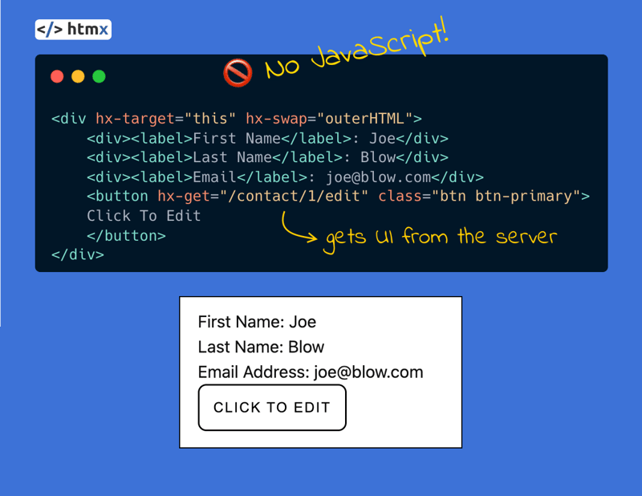
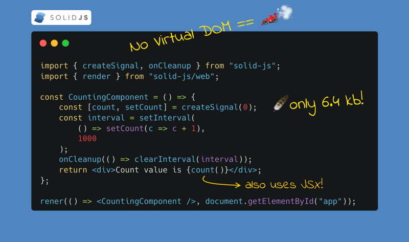
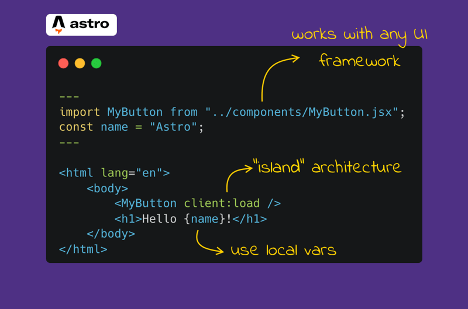
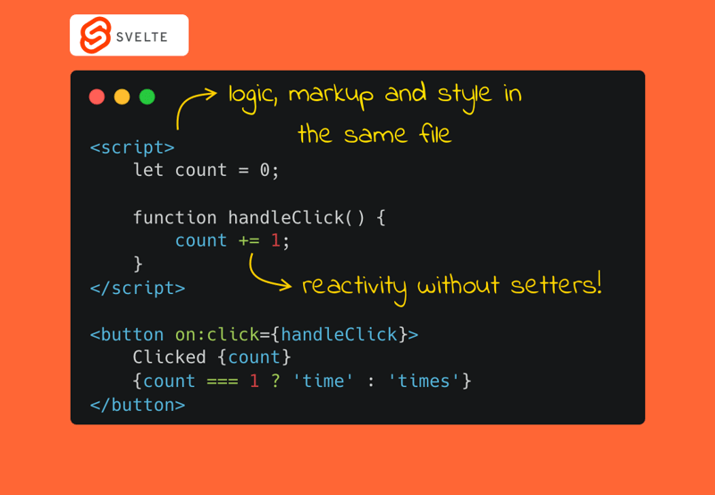
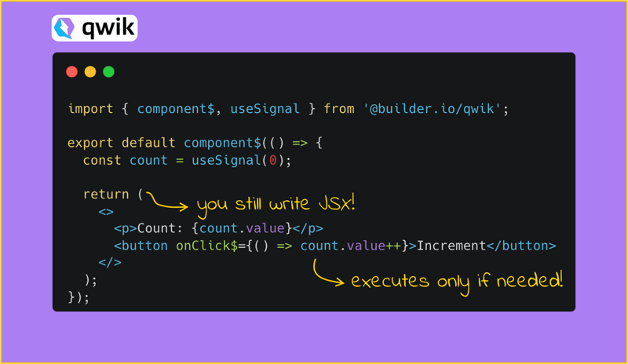

适合人群：
你希望编写更少的 JavaScript
你希望代码更简单，更专注于 hypermedia（超媒体）
HTMX 在 2023 年迅速崛起，在过去一年中获得了超多 GitHub Stars。HTMX 不是平常的 JS 框架。如果你在 HTMX 中工作，你将大部分时间在 hypermedia（超媒体）的世界中度过，以完全不同的视角看待网络开发，而不是我们通常对现代网络开发的重 JS 视角。HTMX 利用了 HATEOAS（Hypermedia as the Engine of Application State）的概念，使开发人员可以直接从 HTML 访问浏览器功能，而不是使用 JavaScript。

适合人群：
如果你想要高度 reactivity 的代码
现有 React 开发者，希望尝试性能高、学习曲线低的框架
Solid.js 是一个非常高效的前端框架，与 React 有一些相似之处。例如，两者都使用 JSX，采用基于函数的组件方法，但 Solid.js 不是使用虚拟 DOM，而是将你的代码转换为纯 JavaScript。而且它更独特的是其细粒度 reactivity 的方法，通过使用 signal、memos 和 effects。signal 是 Solid 中最简单的原语。包含值以及 getter 和 setter 函数，允许框架观察和更新 DOM 中所需的确切位置的变化，而 React 则重新渲染整个组件。
Solid.js 不仅使用 JSX，还对其进行了增强。它提供了一些很棒的新功能，例如 Show 组件，可以启用条件渲染 JSX 元素，以及 For 组件，允许在 JSX 中更轻松地遍历集合。另一个重要的事情是，它还有一个名为 Solid Start 的元框架（目前处于测试版），它允许用户根据自己的偏好以不同的方式渲染应用程序，具有基于文件的路由、actions、API 路由和中间件等功能。

适合人群：
如果你想要一个优秀的博客、CMS 密集型网站工具
一个可以集成其他库和框架的框架
如果你在 2023 年构建了一个内容驱动的网站，那么你很可能会选到 Astro 作为你的首选框架来实现它！Astro 是另一个通过不同的架构概念脱颖而出的框架。它是岛屿架构。在 Astro 的上下文中，岛屿是页面上的一切交互式 UI 组件，从静态内容的海洋中脱颖而出。页面可以有任意数量的岛屿，因为它们彼此独立运行，但它们也可以共享状态并相互通信，非常的好用。
Astro 的另一个有趣之处在于，他们的实现方式允许用户使用不同的前端框架，如 React、Vue、Solid 来构建网站。因此，开发人员可以基于他们当前的知识轻松构建网站，并利用可以集成到 Astro 网站的现有组件。

适合人群：
你想要一个易于学习的框架
简单易写、快速执行的代码
Svelte 是另一个试图通过尽可能简单和初学者友好来简化并加快 Web 开发的框架。它是一个非常简单的框架，框架里有一个 reactive 属性，你只需要声明它并在 HTML 模板中使用它。每当在 JavaScript 中更新值（例如，通过触发 onClick 事件按钮）时，它将反映在 UI 上，反之亦然。
Svelte 的下一步将是引入 Runes。Runes 将是 Svelte 处理 reactivity 的方式，这样能够更轻松地应对大型应用。类似于 Solid.js 的 signal，Runes 提供了一种直接用函数语句的方式来接入应用的 reactivity 状态。与 Svelte 当前的工作方式相比，它们将允许用户精确定义哪个部分是 reactivity 的，这样组件可以优化性能。
类似于 Solid 和 Solid Start，Svelte 也有自己的框架，称为 SvelteKit。SvelteKit 为用户提供了一种快速启动 Svelte 应用的方法，由 Vite 提供支持。它提供了路由器、构建优化、不同的渲染和预渲染方式、图像优化等。

适合人群：
如果你想要一个高性能的 Web 应用
现有 React 开发者，希望尝试性能高、学习曲线低的框架
我们最后但同等重要的框架是 Qwik。Qwik 是另一个使用 JSX 和函数式组件的框架，类似于 Solid.js，为基于 React 的开发者提供一个熟悉的环境，以便尽可能快的上手。正如其名称，Qwik 的主要关注点是实现应用程序的最高性能和执行速度。
Qwik 通过使用可恢复性概念来实现其速度。简而言之，可恢复性基于在服务器上暂停执行并在客户端上恢复执行，而无需重放和下载所有应用程序逻辑。这种行为是通过延迟 JavaScript 代码的执行和下载来实现的，除非需要处理用户交互，这是一个很好的事情。它既可以提高整体速度，又可以降低带宽到绝对最低，从而实现几乎即时的加载。